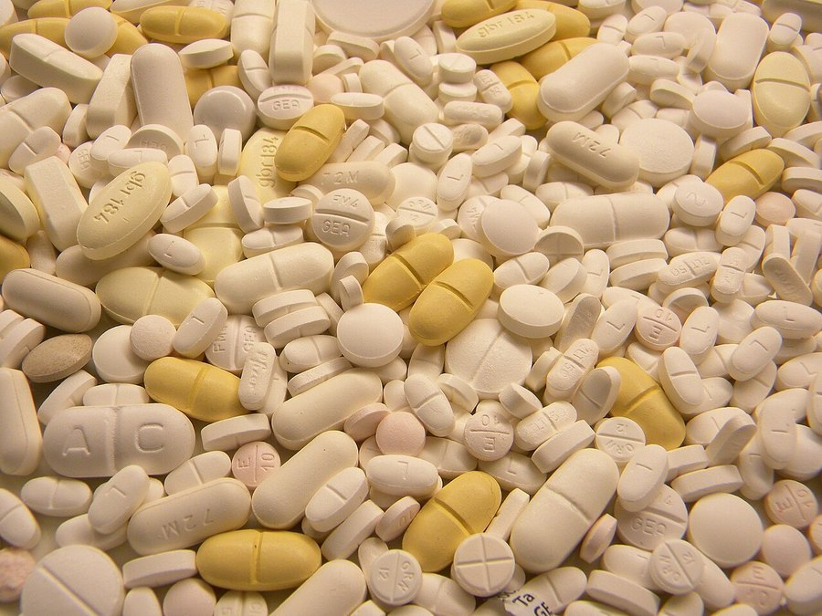

Does Memopezil Work? An Honest Look at the Evidence
Three of its five ingredients are dosed in line with research. Two aren't. Here's what that means for what you'd actually feel, and for whom.

Key takeaways
- No trial has tested Memopezil itself. Everything we can say comes from research on its individual ingredients.
- Three ingredients sit in or near studied ranges. L-theanine and rhodiola are in range; bacopa is at about two-thirds of the usual trial dose.
- Two are well below research doses. Panax ginseng at 90 mg and BCAAs at 540 mg are unlikely to pull much weight.
- The memory effect, if any, is slow and modest. Bacopa trials measured small recall gains at 8 to 12 weeks, not days.
- The best-matched buyer is an adult with ordinary age-related slips who already sleeps and moves reasonably well and will give it three months.
Does Memopezil work? Possibly, in a modest way, for some people. No clinical trial has tested the finished formula. Its strongest memory ingredient, bacopa, has trial evidence for small recall gains after 8 to 12 weeks, and it's dosed a bit below those trials. Two of the five ingredients are underdosed. Expect subtle, slow change at best.
That's not the answer the ads give, and it isn't meant to be. It's what you get when you put each printed dose next to the research it comes from, which is what our Memopezil review did in full. This page takes that work and asks one question of it: what would a real person actually notice?

Memopezil: check today's price
Five ingredients with every dose printed: BCAAs, bacopa, rhodiola, L-theanine and panax ginseng. Two capsules a day, stimulant-free. Sold only on the official site, with a 60-day money-back guarantee.
See the official price →What would it mean for a memory supplement to "work"?
Start here, because most disappointment comes from a mismatch in this definition. In research, "works" usually means a group taking the ingredient scored a little better than a placebo group on a specific test. Often that's delayed word recall: hear a list, get tested later, remember a couple more words.
That's a real result. It's also a long way from "I feel twenty years younger." A supplement that works, in the research sense, might mean names come back a beat faster, or you walk into a room and remember why a bit more often. Many people wouldn't notice that without measuring it.
It never means treating or reversing a medical condition. No supplement treats or prevents dementia, and Memopezil doesn't claim to. If you want the broader picture first, our piece on whether memory supplements work at all sets the baseline for the whole category.
Has Memopezil been tested in a clinical trial?
No. There's no published trial on the finished Memopezil formula. That's normal for supplements. Our review noted that, of the major brands it compared, only Alpha Brain had funded a trial on its own product.
Why does it matter? Because evidence for an ingredient isn't evidence for a product. Trials use particular extracts, at particular doses, often standardized to a set level of active compounds, in particular groups of people. A product can contain the same ingredient name and still differ on all of those points. When we say an ingredient "has evidence," we mean the ingredient, under trial conditions. We're not saying the bottle has been proven.
The upside here is that Memopezil prints every dose. That's what makes the comparison below possible. With a proprietary blend, you couldn't even start.
What better evidence would look like
The gold standard would be a randomized, placebo-controlled trial of the exact Memopezil capsule, run for at least 12 weeks, in the kind of adults it's marketed to, with recall measured by standard tests. Ideally the results would be published in a peer-reviewed journal, not just summarized on a sales page.
That trial doesn't exist. If one ever appears, it would change this page. Until then, the strongest honest claim anyone can make is that the formula contains ingredients with some evidence at roughly similar doses. Be wary of any ad that says more than that, because it's claiming something nobody has measured.
How do Memopezil's doses compare with the research?
Here's the full label against the doses typically used in studies. Doses are per two-capsule serving, as printed.
| Ingredient | Memopezil dose | Typical research dose | What it's studied for | Fair assessment |
|---|---|---|---|---|
| Bacopa monnieri extract | 200 mg | 300 mg/day, standardized extract, 12 weeks | Delayed recall, learning | About two-thirds of the trial dose; strongest evidence of the five |
| Rhodiola rosea | 100 mg | 100–576 mg/day | Mental fatigue, stress | In range, at the low end |
| L-theanine | 100 mg | 100–200 mg/day | Calm focus, attention | In range |
| Panax ginseng extract | 90 mg | 200–400 mg/day | Alertness, working memory | Under half the studied amount |
| BCAAs (2:1:1) | 540 mg | 5,000–10,000 mg | Central fatigue | Roughly a tenth; thin memory evidence |
Read across the rows and a pattern appears. The formula is built around a sensible trio: bacopa for slow, cumulative memory support, rhodiola for mental fatigue, and theanine for calm attention. The other two are on the label, but at amounts that make a real contribution unlikely.
Rhodiola and theanine deserve a fair word too. Rhodiola's trials are small and mostly look at fatigue under stress, such as exam periods or shift work, so the 100 mg here matches the low end of a modest literature. Theanine's 100 mg is the dose most often tested for calm attention, and it's the ingredient people are most likely to feel. Neither is a memory ingredient in the strict sense. Both can make it easier to concentrate, and concentration is where a lot of everyday forgetting starts.
Is 200 mg of bacopa enough to work?
It's the most important question on this page, since bacopa is the only ingredient with a real memory trial record. Most of those trials used around 300 mg a day of an extract standardized to roughly 45 to 55 percent bacosides, taken for 12 weeks. Memopezil's 200 mg is about two-thirds of that.
Two-thirds of a studied dose isn't nothing. It also isn't the dose that produced the published results, and nobody has tested whether 200 mg gets you most of the effect or much less of it. The label doesn't state the bacoside percentage of the extract, so that part can't be checked against the trials either. If you want to dig into how bacopa works and why it's slow, our bacopa monnieri guide covers the research.
So the fair summary: the main ingredient is the right one, at a somewhat lower dose than the evidence. That lowers the odds of a noticeable effect without ruling it out.
Which Memopezil ingredients probably don't do much?
Panax ginseng and the BCAAs. Ginseng has a mixed research record for alertness and working memory, mostly at 200 to 400 mg a day. At 90 mg, Memopezil gives you less than half of the low end. The NCCIH's page on Asian ginseng describes the evidence for cognition as limited even at full doses.
BCAAs are the bigger gap. At 540 mg they're the largest line on the label. Yet the research that exists, mostly on central fatigue and recovery from brain injury, uses grams per day, roughly ten to twenty times more. Evidence for memory in healthy adults is thin even at those amounts.
Neither ingredient is harmful at these doses. They just shouldn't be counted as reasons to buy. Think of Memopezil as a three-ingredient formula with two extras.
What might you actually notice, and when?
The ingredients act on different clocks, so the honest picture changes over time.
- L-theanine (hours): at 100 mg, some people feel a calmer, less scattered kind of attention within an hour. It pairs well with morning coffee. That's a focus and stress effect, not a memory one. Our article on green tea and brain health covers where it comes from.
- Rhodiola (days to weeks): may take the edge off mental fatigue during demanding stretches. Effects in trials are modest and the studies are small.
- Bacopa (8 to 12 weeks): the only plausible route to a change in recall itself. Expect nothing measurable in the first month.
- Ginseng and BCAAs: at these doses, don't count on noticing them.
This is why people's verdicts on Memopezil split so sharply. Someone who notices the theanine calm in week one may decide it "works" before bacopa has done anything. Someone else who notices nothing for six weeks may quit right before the window where bacopa trials reported differences.
Who is most likely to notice a difference?
Based on how the ingredients were studied, the people with the best odds share a few traits:
- Adults over 45 with ordinary age-related slips: names, keys, the reason you opened the fridge.
- People whose forgetfulness gets worse under stress or mental fatigue, since that's where rhodiola and theanine have something to offer.
- Those who already sleep reasonably well and stay active, so the supplement isn't fighting a bigger, fixable problem.
- Anyone willing to take it every day for a full 12 weeks and measure the result rather than guess.
That last point does a lot of work. Bacopa accumulates. Missed days matter more than exact timing, and a test shorter than eight weeks can't really answer the question.
Who is unlikely to benefit, or should skip it?
- Anyone wanting a same-day kick. It's stimulant-free and slow. Coffee and a good night's sleep outperform any supplement on day one.
- People with sudden or worsening memory changes. That needs a doctor, not a capsule. Our guide to memory loss versus normal aging explains which signs to take seriously.
- Anyone on blood thinners, diabetes or thyroid medication, antidepressants or sedatives without checking with their doctor first. Ginseng and rhodiola both interact.
- Pregnant or breastfeeding women.
- People only willing to try one or two bottles. You'd likely stop before the evidence window opens.
Why do some people say Memopezil doesn't work?
Our review found the substantive complaints fall into three groups. The most common was that the effect felt too subtle, often from people expecting a stimulant-style kick. Next came the complaint that it took too long, usually from people who stopped around six weeks. The third was a general "I expected more," which tracks with advertising that promised far more than the label can deliver.
All three point to expectations, not a broken product. They're still fair complaints. If the ads set you up for a transformation, the real effect, if any, will feel like a letdown. Go in expecting a modest, gradual change, or don't go in at all.
There's a quieter problem on the other side too. Memory is hard to judge from the inside. A good week feels like proof, a bad night's sleep feels like failure, and both can be pure noise. People who say it worked and people who say it didn't are often reacting to the same kind of random swing. The fix is boring: measure under similar conditions before you start and again at week eight, then trust the numbers over the mood.
Pros and cons at a glance
| What works in its favor | What counts against it |
|---|---|
| Every dose is printed, so you can check it | No trial on the finished formula |
| Bacopa, the best-evidenced memory botanical, is the anchor | Bacopa at 200 mg is below the usual 300 mg trial dose |
| L-theanine and rhodiola within studied ranges | Ginseng and BCAAs well below research doses |
| Stimulant-free, generally well tolerated | Any memory effect takes 8 to 12 weeks |
| 60-day money-back guarantee on official orders | Guarantee ends before a full 12-week trial does |
So, does Memopezil work? Our verdict
It has a plausible mechanism and an honest label, and that's more than many products in this category can say. The bacopa, rhodiola and theanine trio is a reasonable combination. Two of the five ingredients are mostly decoration. And nobody, including us, can promise a result, because the finished formula has never been tested.
Is the chance of a modest effect worth the money? At the published rates, it's about $1.63 to $2.63 a day depending on the pack, with no subscription. That's in the normal range for the category. What you're paying for is a reasonable shot at a small benefit with a refund behind it, not a guaranteed result.
If you fit the profile above, a fair test looks like this: take it daily for at least eight weeks, measure before and after, and use the 60-day guarantee if the numbers don't move. If you'd rather see how it stacks up first, our 2026 memory supplement rankings compare it with the alternatives on dose disclosure, evidence and cost.
Memopezil: check today's price
Five ingredients with every dose printed: BCAAs, bacopa, rhodiola, L-theanine and panax ginseng. Two capsules a day, stimulant-free. Sold only on the official site, with a 60-day money-back guarantee.
See the official price →Frequently asked questions
Is there any scientific proof that Memopezil works?
Not for the product itself. No published clinical trial has tested the Memopezil formula. The evidence available is for its individual ingredients, mainly bacopa monnieri, L-theanine and rhodiola, studied separately and often at different doses than the label uses.
Will Memopezil help with brain fog?
It might help the attention side of brain fog modestly, through L-theanine and rhodiola, which are studied for calm focus and mental fatigue. Brain fog has many causes, including poor sleep, blood sugar swings, thyroid problems and medications, so if it's persistent, see a doctor to rule those out first.
Can Memopezil reverse memory loss?
No. It's a dietary supplement, not a medicine, and it doesn't treat, reverse or prevent dementia or any other disease. The research on its ingredients points to small improvements in recall and attention in healthy adults, not recovery from a medical condition.
Does Memopezil work better than coffee?
They do different things. Coffee gives a fast, short alertness lift. Memopezil is stimulant-free and aims at slow, cumulative effects over weeks. Many people take both, and the L-theanine in Memopezil may take the edge off coffee jitters.
Why do online reviews of Memopezil disagree so much?
Partly because the ingredients act on different timelines, so people judging at week one and week ten report different things. Our review also found pages listing ingredients that aren't on the label, which suggests some reviewers never looked at the product.
Would taking more capsules make Memopezil work faster?
No. Bacopa's effect builds over weeks regardless of dose, and taking more than the labeled two capsules raises the chance of stomach upset and interactions without any evidence of faster results. Stick to the label.
How can I tell if Memopezil is working for me?
Measure instead of guessing. Take a short memory test before your first dose and again around week eight, under similar conditions. A clear change in score is far more reliable than a general impression of feeling sharper.
Ready to run a fair test?
Order through the official checkout to get the 60-day money-back guarantee, start on the day it arrives, and judge it around week eight.
See Memopezil's official price →Related: Memopezil review 2026 · Memopezil ingredients explained · Do memory supplements work? · Bacopa monnieri benefits · Best memory supplements of 2026
Image: Pöllö / Wikimedia Commons / CC BY 3.0